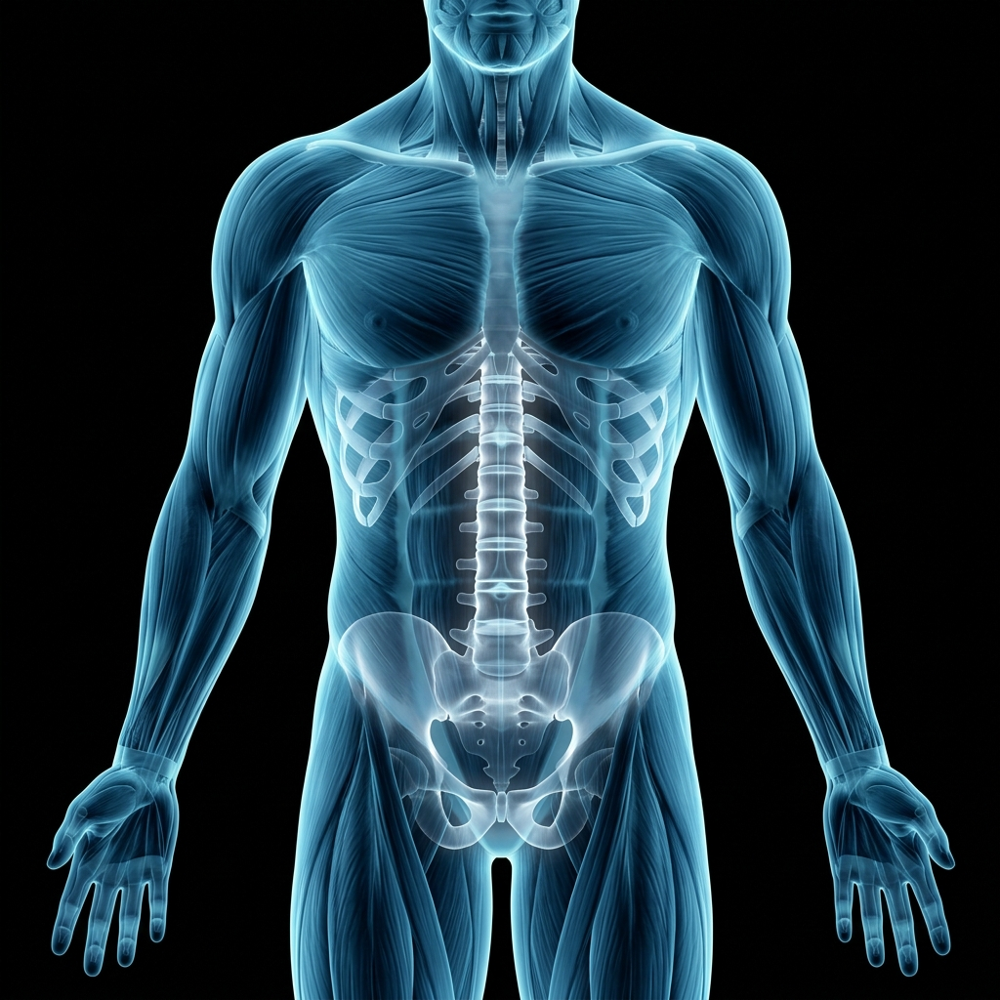
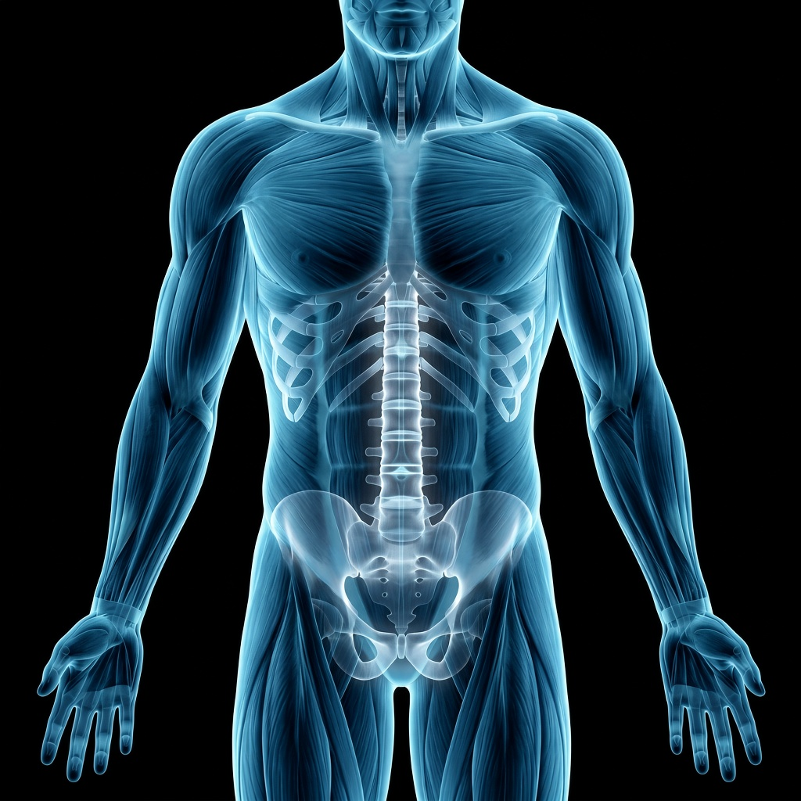
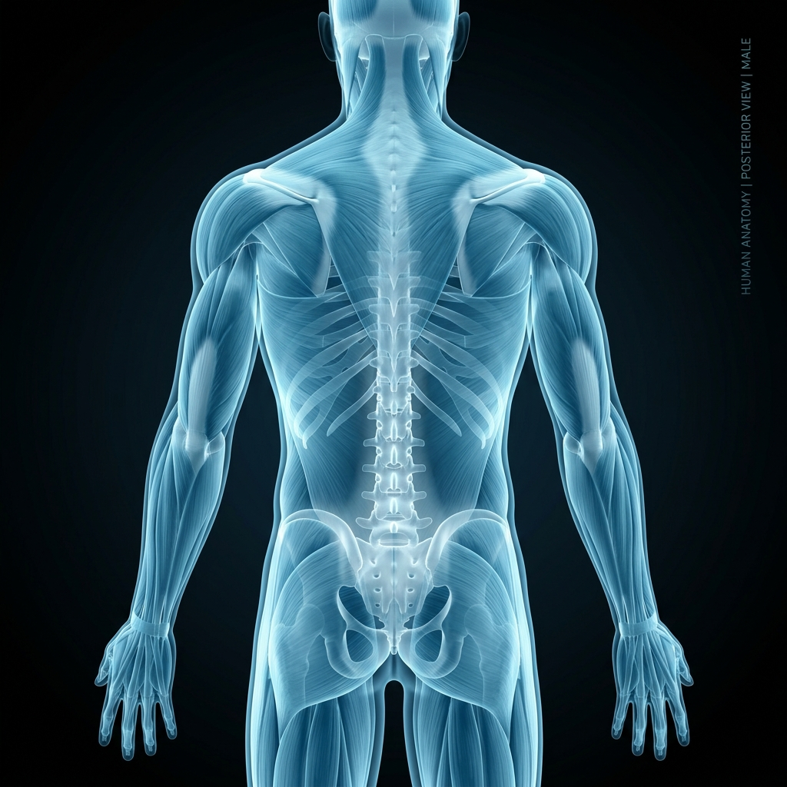
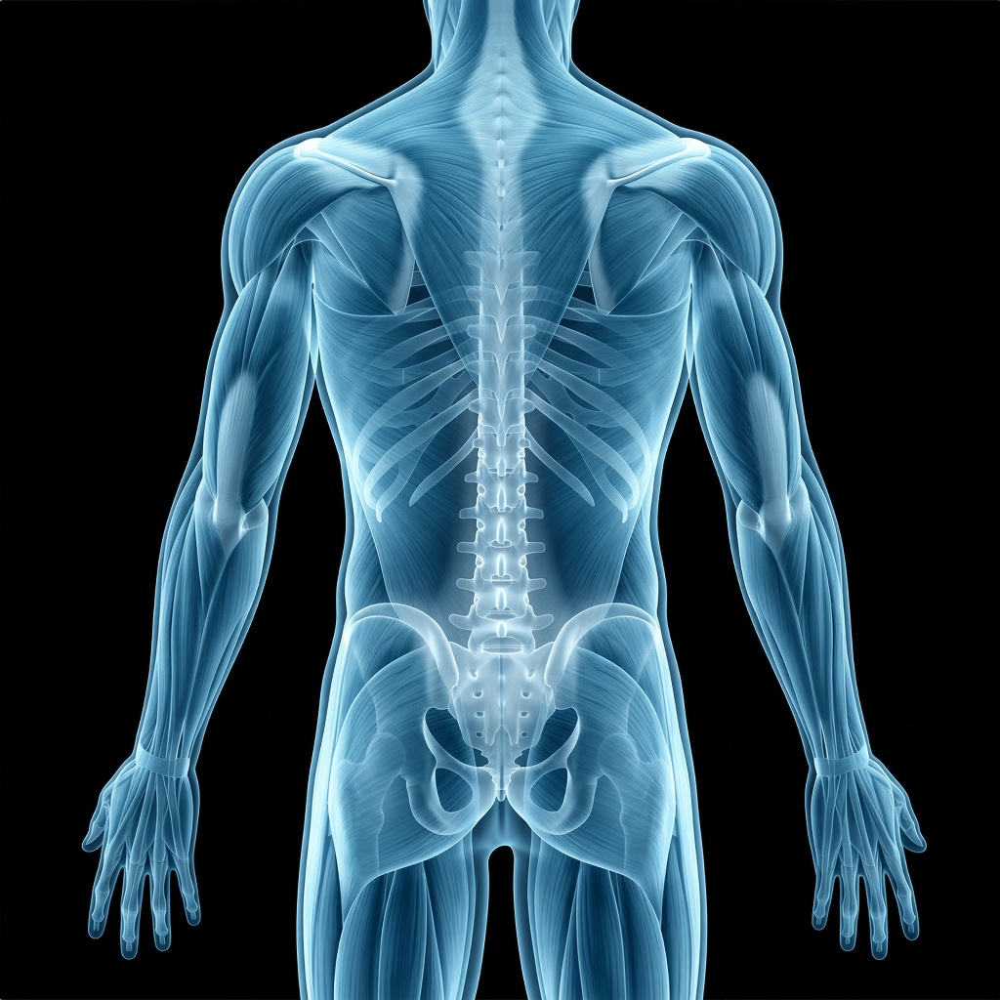
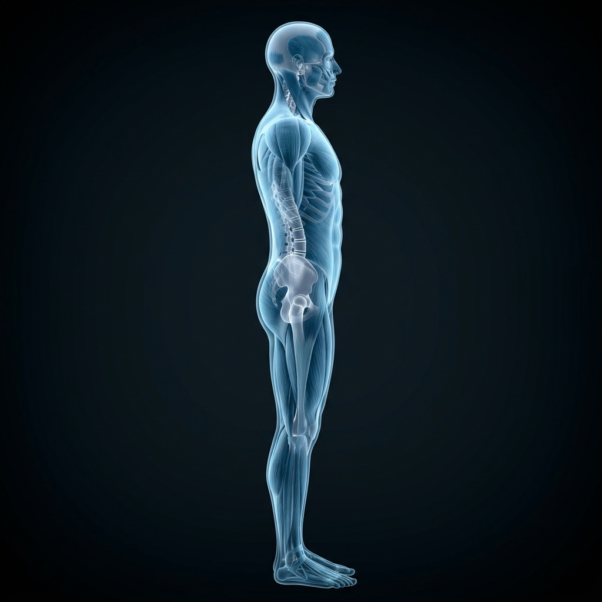
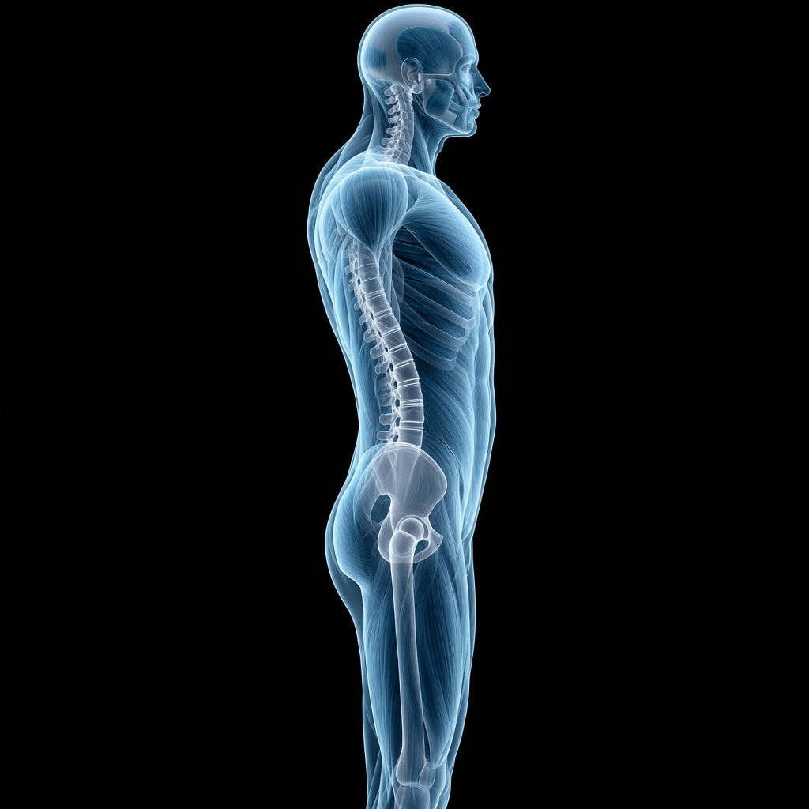
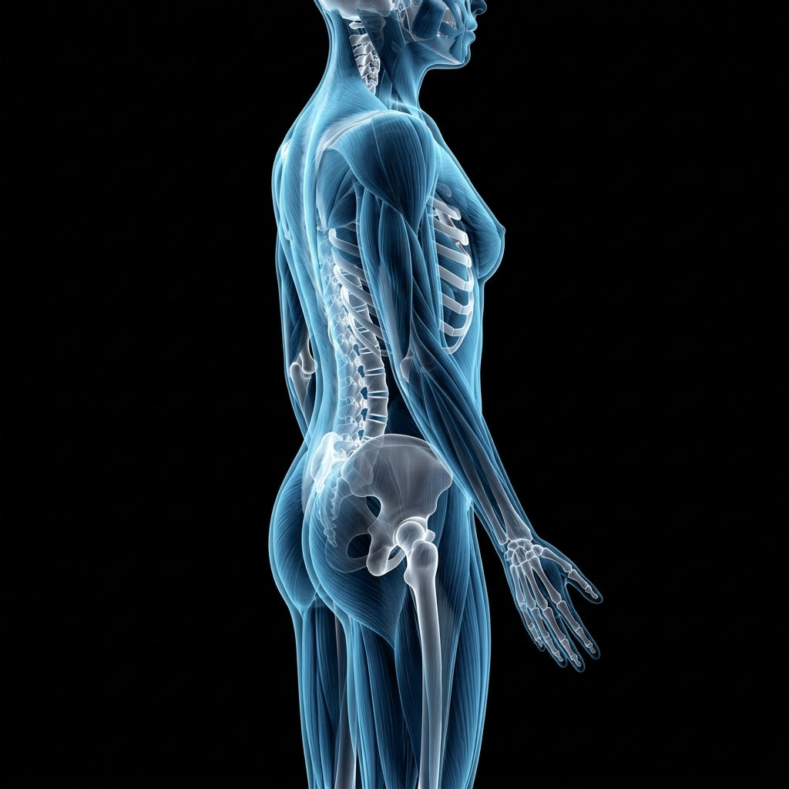
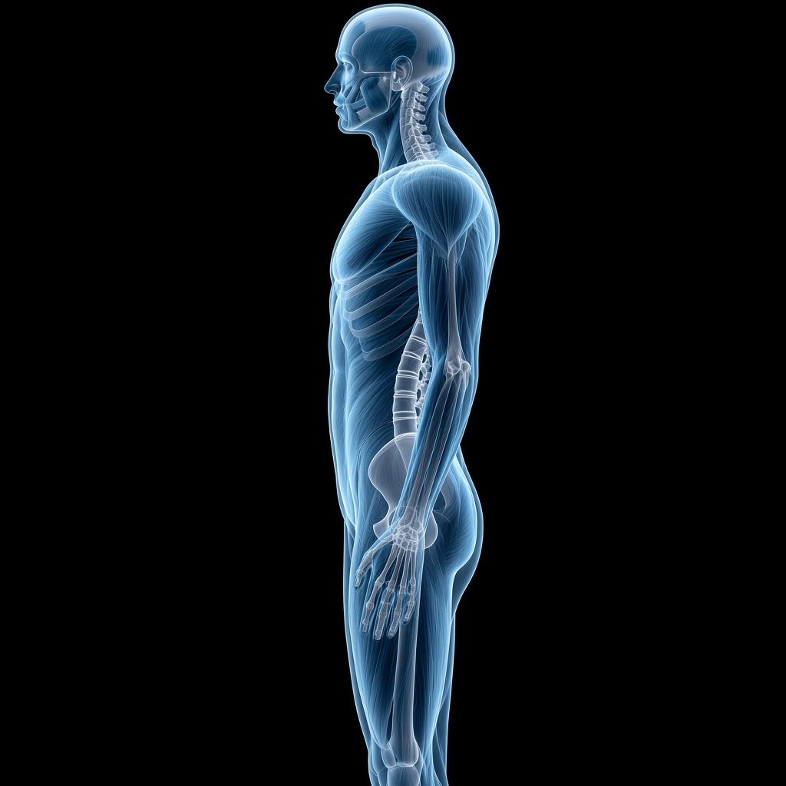

Front anterior


Back posterior


Left viewer sees body’s left · yaw −π/2


Right viewer sees body’s right · yaw +π/2


Quick read
- Style match: Candidate keeps the cyan/blue translucent muscle + glowing skeleton on black used by current plates.
- Framing: Current front/back are upper-body crops; current left is closer to full-body. Candidate aims for a more consistent mid-neck→mid-thigh crop across all four.
- Laterality: Current adult-female left/right files are byte-identical to adult-male left/right. Candidate right is a true opposite lateral (face toward image-left).
- Sex consistency: Current right plate reads more female in places; candidate set is intentionally adult-male throughout.
- Not production-ready: AI plates are for comparison only — do not replace
public/anatomy/without clinical art review and region-map revalidation.